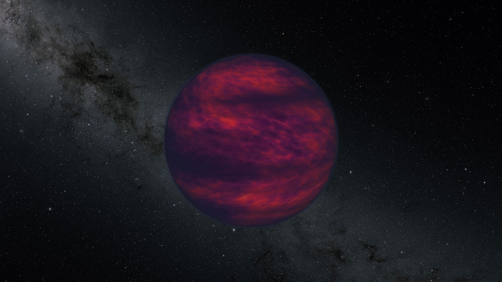

Részt vettem egy kutató munkában is, amelyben megmértük közvetlenül a szélsebességet egy barna törpén. Ez egy olyan égitest, amelynek tömege nagyobb a Jupiterénél, Naprendszerünk legnagyobb bolygójáénál, de ahhoz nem elég nagy, hogy csillaggá váljon. A projektben, amerikai kutatókkal együtt, egy olyan új módszert alkalmaztunk, amellyel a Naprendszeren kívüli gázbolygók légkörét is vizsgálhatjuk.
Kutatásunk eredményeit a Science című folyóiratban egy, a közelmúltban közzétett tanulmányban ismertették. A kutatásunk célpontja a 2MASS J10475385+2124234 jelű égitest volt, egy barna törpe, amely kozmikus mértékkel egy kőhajításnyira, mindössze 32 fényévre van a Földtől. A kutatócsoportunk a NASA nemrég nyugdíjazott infravörös Spitzer-űrtávcsövének adatait és több rádióteleszkóp méréseit használta fel, és úgy számoljuk, hogy a bolygón 2293 kilométeres óránkénti sebességgel fújnak a szelek. Összehasonlításképpen a Neptunusz légkörében fújnak a leggyorsabb szelek a Naprendszerben: a sebességük akár 2000 km/h is lehet.

Barna törpe (illusztráció)